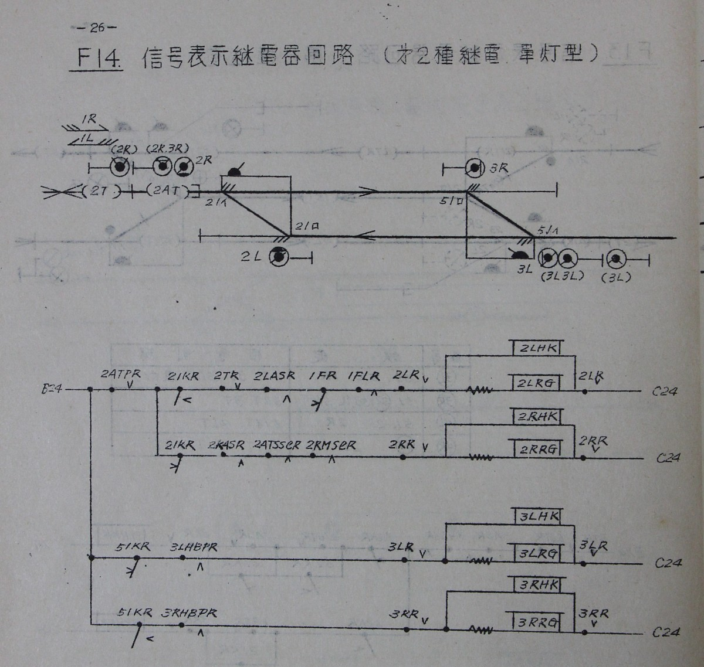
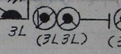
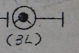
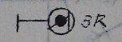
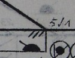
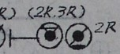
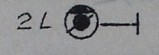
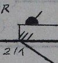

全体
簡単そうなところから。
単灯式信号機を使用している第2種継電連動の信号表示回路です。
単線の高密度線区、非自動ですから、伯備線あたりにありそうな構成でしょうか。

右側(3R, 3L)と左側(2R, 2L)で別々の標準回路なようです。
右側(3R, 3L)は軌道回路がなく信号機も手動。通表閉塞などを意図しているようです。
左側(2R, 2L)は軌道回路があり、運転方向(1R, 1L)もあります。連動閉塞、連鎖閉塞を意図しているようです。
右側(3R, 3L)
- 右側の場内信号機3Lは、下側に従属信号機(通過信号機)がついた単灯式信号機です。
信号機の上に横線(図では縦向きですが…)が、手動信号機なことを表現してます。
手動信号機は、定位→反位、反位→定位ともに手動で転換する信号機です。
列車が信号機の内方に入っても現示は停止に勝手に変わらず、てこを定位に戻すまでは進行現示のままです。
- 3Lにくっついた従属信号機(通過信号機)に書かれた、(3L 3L) は (2L 3L) の間違いに見えます。
2Lと3Lがともに反位の場合に進行の現示が出るという記述でしょうか。
遠方信号機 は場内信号機のみから現示が決まるので、(3L) ですね。
- 出発信号機3Rも、手動信号機ですね。
- 転てつ機51は、電気鎖錠機つきの現場扱いの転てつ機ですね。
転てつ機の中が黒く塗られているのが電気鎖錠機付きを表現しているんでしたっけか。
- 軌道回路は、ありません。
場内信号機3Lの制御条件です。
制御対象の3LHKは「進行信号制御リレー」、3LRGは「反位表示灯」ですかね。
3LRが両側に入っているのは謎です。
接点の溶着対策?
51KR「転てつ機表示リレー」、3LHBPR「3LのH(進行)の反位接点反応リレー」、3LR「3Lてこリレー」のANDで、3Lの表示を制御しています。
51K定位と3LR反位はわかるのですが、3LHBPRって何の役割を果たしているのか謎…。
反位接点反応リレーは2R側には挿入されていません。
3R(出発信号機)もほぼ同様の制御になっていますね。
こちらも3RHBPRの目的がわからない…
左側(2R, 2L)
左側です。
- 場内信号機も通過信号機がついた単灯信号機です。
こちらは半自動(保留)ですね。右側の黒塗りがポイントです。
半自動(保留)の信号機は、定位→反位はてこにより転換しますが、
列車が信号機の内方に入るとてこが定位のままでも自動で反位→定位になります。
てこを一度定位に戻さないと、再び反位にすることはできません。
- 出発信号機2Lも、半自動(保留)ですね。
- 転てつ機21ｲ、21ﾛは51と同じです。
- こちらは軌道回路があります。
出発信号機2Lの制御条件です。こちらはにぎやかです。
-
21KR「転てつ機表示リレー」は転轍機の進路、
2ATPR, 2TRは軌道回路です。
1FR(運転方向リレー)、1FLR(運転方向鎖錠リレー) は運転方向ですね。
2LRはてこリレーです。
-
2LASRは接近鎖錠リレーですね。場内信号機手前で接近点制御をすることを想定しているのでしょうか。
-
こちら側は、反位接点反応リレーがありません。
てこリレーが両側に挿入されているのは、同様です。
-
半自動(保留)は、現示は軌道回路により復帰するはずですが、表示回路には出てきません。
てこリレーが復帰するように構成するのでしょうかね。
場内信号機2Rの制御条件です。
- こちらも、21KR「転てつ機表示リレー」、2ATPRが入っています。
- 2RASRは接近鎖錠。この構成だと左側に軌道回路がないので接近鎖錠は組めない気がしますが
左側にも軌道回路がある場合にはここに接近鎖錠を入れるという意味でしょう。
-
2ATSSlRは2ATの軌道回路のオフディレイで、おそらく列車が2ATを抜けても
信号機の現示を赤のままにするためではないかと。
-
2RMSlRは「2Rの表示鎖錠緩放リレー」?
このリレーは2ATSSlRと役割が同じに見えて単に遅延させるだけに思えるのですが…
簡単そうだと思ったのですが、
これだけでも結構おなかいっぱいです。。。一つ一つに意味があるのでしょうが、意図がわかりません。奥が深いです。。。